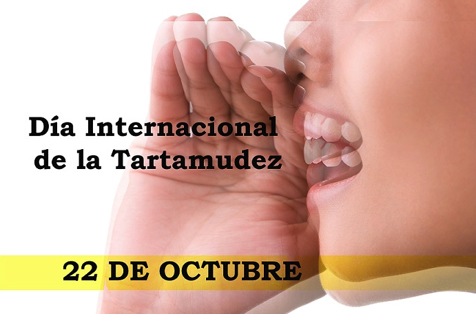

Los posibles porque de las burlas
Mauricio Ferreyra 26/07/23
La tartamudez es un trastorno del habla que afecta a millones de personas en todo el mundo. Aquellos que padecen esta condición enfrentan desafíos únicos en su vida diaria, especialmente en sus interacciones sociales. Lamentablemente, la tartamudez a menudo se asocia con burlas y discriminación, lo que puede tener un profundo impacto en la autoestima y la confianza de quienes la sufren. En este artículo, exploraremos la triste realidad de las burlas que enfrentan las personas que tienen tartamudez y abogaremos por la sensibilización y el respeto hacia aquellos que viven con esta condición.
La Tartamudez mas que un problema de habla
La tartamudez va más allá de las repeticiones o bloqueos del habla; es un trastorno complejo que involucra aspectos emocionales y psicológicos. A menudo, las personas que tartamudean experimentan ansiedad, vergüenza y frustración debido a las dificultades que enfrentan al comunicarse. La falta de comprensión de esta condición puede llevar a que algunas personas se burlen de quienes la padecen, lo que agrava aún más la situación y dificulta el proceso de comunicación.
El Impacto de las Burlas en las Personas que Tartamudean
Las burlas dirigidas a las personas que tartamudean pueden tener un profundo efecto negativo en su bienestar emocional y social. La autoestima y la confianza se ven afectadas, lo que puede llevar a la evitación de situaciones sociales y la reclusión. Muchas personas que tartamudean evitan hablar en público o participar activamente en conversaciones, lo que puede limitar sus oportunidades académicas, profesionales y sociales. Además, las burlas pueden generar sentimientos de aislamiento y soledad. El temor al ridículo puede convertirse en una barrera para el establecimiento de relaciones significativas y el desarrollo de conexiones con los demás. Las personas que tartamudean a menudo se sienten incomprendidas y juzgadas, lo que puede llevar a la depresión y la ansiedad.
Promoviendo la Sensibilización y el Respeto
La clave para abordar las burlas hacia las personas que tartamudean es la sensibilización y la educación. Es importante difundir información precisa sobre la tartamudez y desmitificar los conceptos erróneos que existen en torno a esta condición. Algunos puntos esenciales a tener en cuenta son: La tartamudez no es una debilidad ni una falta de inteligencia. Es un trastorno del habla que no define la valía de una persona. La tartamudez no es algo que se pueda controlar simplemente con la voluntad. No es un problema de "nervios" o falta de práctica. La empatía y la paciencia son fundamentales al interactuar con alguien que tartamudea. No interrumpir ni finalizar las frases de la persona puede ayudar a mejorar la comunicación. Las burlas y la discriminación hacia las personas que tartamudean son inaceptables y no contribuyen a un ambiente respetuoso y compasivo.
Conclusión
Es imperativo que como sociedad trabajemos para eliminar las burlas y la discriminación hacia las personas que tienen tartamudez. La educación y la sensibilización son herramientas poderosas para romper las barreras de comunicación y fomentar un entorno más inclusivo y respetuoso. Apoyar y valorar a las personas que tartamudean no solo les brinda la oportunidad de desarrollar su máximo potencial, sino que también nos enriquece como comunidad al celebrar la diversidad de nuestras habilidades y experiencias individuales. Juntos, podemos construir un mundo en el que todos podamos expresarnos libremente y sin miedo